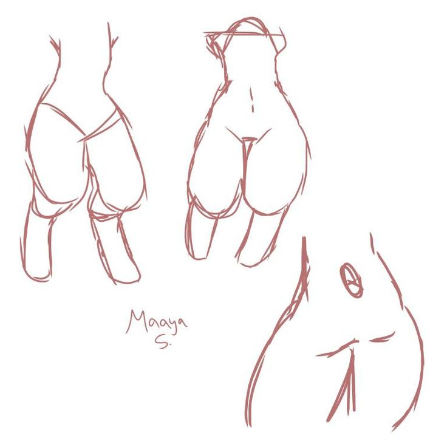
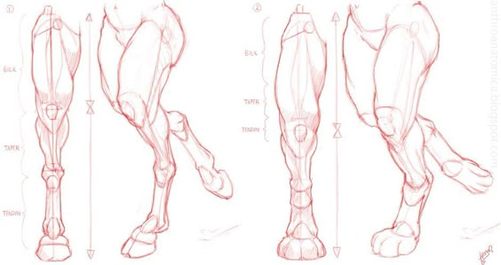

Descrição da Seção
Esta seção ê feita pra melhorar seus desenhos de pernas.
Exemplos
Desenhe todos os desenhos dos exemplos para treinar.
- 
- 
* Desenhe formas geométricas simples, como cilindros ou retângulos, para representar as coxas e panturrilhas, criando uma base sólida. Ao adicionar a articulação do joelho, lembre-se de que ela costuma ser mais arredondada e considere a posição da perna e a perspectiva.